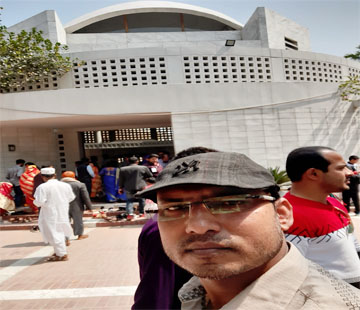
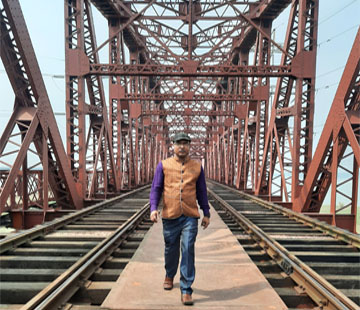
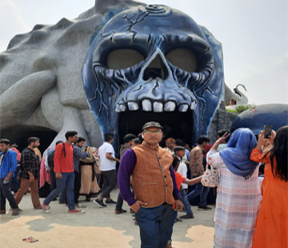

My Turr
Latest Story From

Turr House Of Bonggobondhu Tungipara,Gopalgong,Bangladesh..
This trip was an educational trip for me. I went there with a lot of curiosity of my own. What I saw and felt when I was there was how normal and normal he really lived his life. Which can be understood by looking at the surroundings of his house and the furniture of that time. Really he is live in legend & Man in Million...

Picnic Turr "Hadding Briz" Pabna Issordi ,Bangladish...
This trip was originally from my office on 03/08/2020 for a picnic at Natar Nalpur "Green Valley" Park with all the office staff. And on the way there is the Hadding Rail Bridge. The bridge was built by the British government during the Pakistan period, as the bridge has a long history. From that place we basically spend some time there and visit closely.

Picnic Turr "Grrren Velly Park" Nator Nalpur,Bangladesh...
This trip was originally from my office for a picnic on 03/08/2020 with all the office staff. And there we have a lot of fun and a lot of artificial things to watch. Which is really a fascinating environment to see. Which may be in my life! The whole life will be a memory.